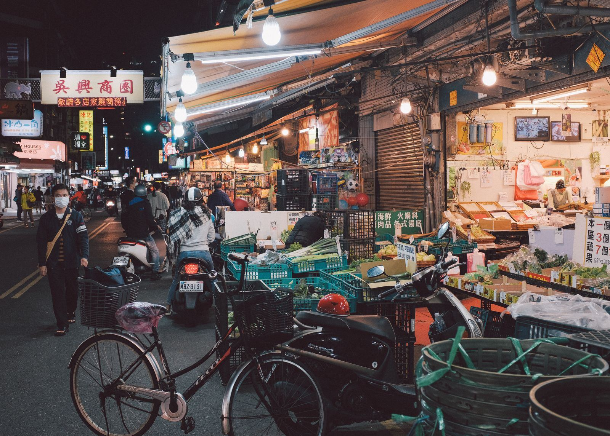

타이베이 가족여행 경비, 4인 3일이면 현금·카드 어떻게 나눌까?
얼마를 환전할지보다 어디에 무엇으로 낼지를 먼저 정하면 — 가족 경비가 훨씬 단순해져요.
게시
"네 식구 3일인데 현금을 얼마나 바꿔 가야 할까요?" 타이베이 가족여행 경비는 총액보다 결제 수단을 나누는 게 먼저예요. 야시장·노점은 현금, 호텔·백화점은 카드, 교통은 이지카드처럼 나누면 환전 금액이 자연스럽게 정해지거든요. 대만 관광서 안내와 실제 여행자들의 경험을 바탕으로 정리해봤어요.
01 · 타이베이 가족여행 경비, 결제 수단별로 나누기
| 현금(NT$) | 신용카드 | 이지카드 | |
|---|---|---|---|
| 주로 쓰는 곳 | 야시장, 노점, 작은 식당 | 호텔, 백화점, 체인 식당 | MRT·버스, 편의점 |
| 장점 | 어디서나 통함 | 큰 금액을 편하게 결제 | 가족 인원만큼 만들면 이동이 빠름 |
| 주의 | 재환전하려면 환전 영수증 필요 | 가게마다 사용 가능 여부 다름 | 가맹점 결제 1회 NT$1,500·1일 NT$3,000(2026년 9월 기준) |
02 · 대만 돈, 이것만 알면 돼요
대만 화폐는 신타이완달러(New Taiwan Dollar)예요. 지폐는 2000·1000·500·200·100, 동전은 50·20·10·5·1 단위가 있어요. 노점과 작은 가게에서는 큰 지폐보다 100·500 지폐와 동전을 넉넉히 가지고 다니면 계산이 편해요.

03 · 환전과 카드, 이렇게 준비해요
환전은 지정 은행·호텔에서 외화 환전은 정부 지정 은행과 호텔에서 할 수 있어요. 받은 영수증은 남은 돈을 재환전할 때 필요하니 버리지 마세요.
카드는 두 장 이상 주요 신용카드를 쓸 수 있지만 가게마다 달라요. 한 장이 안 될 때를 대비해 브랜드가 다른 카드를 챙기세요.
봉사료 확인 호텔과 식당에는 관례적으로 10% 봉사료가 붙어요. 계산서에 이미 포함됐는지 보세요.
아이 이지카드 가족 수만큼 이지카드를 만들면 개찰구에서 기다리지 않아요.
04 · 가족 경비 짜는 순서
먼저 일정표에 야시장·노점 식사 횟수를 적고 그 부분만 현금으로 계산하세요. 나머지 식사와 쇼핑은 카드, 교통은 이지카드 충전액으로 잡으면 환전 금액이 필요 이상 커지지 않아요. 수수료가 없는 ATM이나 카드별 혜택 같은 정보는 은행·카드사 공지로 따로 확인하는 게 안전해요.
"현금은 야시장 몫만, 나머지는 카드와 이지카드로." — 가족과 타이베이를 다녀온 여행자들의 조언을 요약했습니다.
현금이 필요한 곳을 미리 알면 환전 금액을 잡기 쉬워요. 타이베이 노점 맛집에서 야시장·노점 가게를 보고, 줄 서서 사 먹는 간식으로 알려진 푸저우 스쭈 후추빵처럼 작은 가게는 현금을 준비하는 편이 안전해요. 동선은 타이베이 맛집 지도에서 한 번에 볼 수 있어요.
지도에서 타이베이 노점 맛집을 찾아보세요
현금이 필요한 노점과 야시장 가게를 지도에서 미리 확인해보세요.